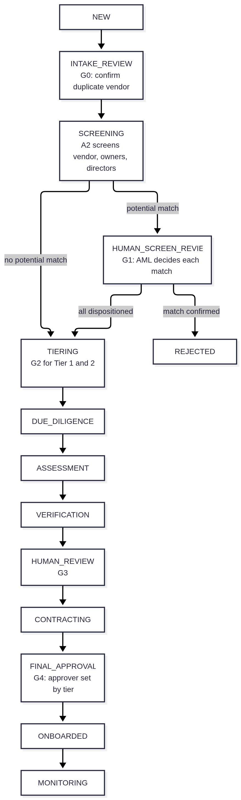
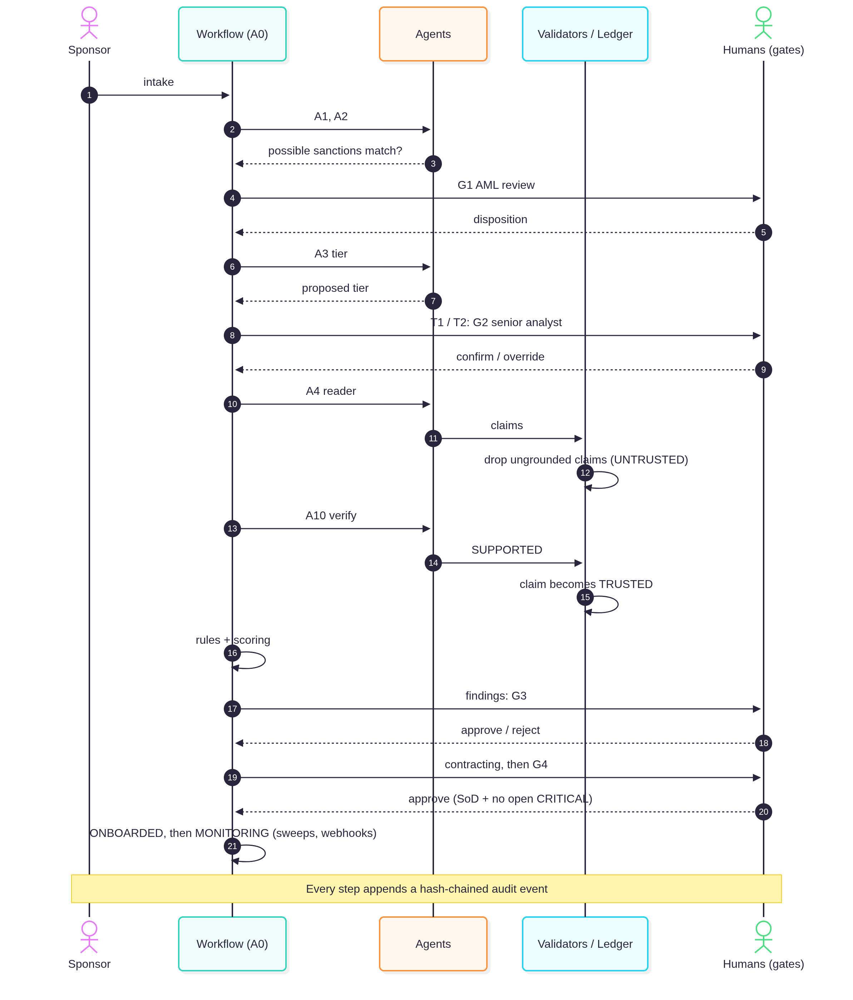

Let the LLM propose.
Let code decide.
An evidence-first, human-gated multi-agent system for onboarding vendors: sanctions screening, SOC 2 review, risk tiering and audit-ready reporting, where the model is never allowed to approve anything.
The use case
A bank does not buy software from a vendor. It lends the vendor a piece of its own risk.
Document-heavy
SOC 2 reports, financial statements, contracts, pen-test summaries, ownership declarations.
Judgment-heavy
Sanctions near-matches, ownership aggregation, control gaps, how to tier the relationship.
High-stakes
A missed sanctions hit or an unreviewed breach clause can cost the bank its licence.
The trap
The vendor writes the evidence. If an agent obeys what a document says, the subject of the investigation can instruct the investigator.
One rule, enforced in code
LLMs propose, deterministic code disposes. Agents never approve, reject, clear a sanctions match or send a message. These principles appear in the repo as validators, tests and comments, not just prose.
Hard rules live in code
Thresholds and role matrices are YAML policy packs; enforcement is Python no prompt can reach.
No claim without evidence
Every claim carries a document, page, verbatim quote (≤40 words) and the source's SHA-256.
Agents never decide
No approval tool, no send tool, no way for an agent to call the workflow engine.
Documents are data
Vendor text is wrapped, sanitised and never obeyed.
Stale ≠ deleted
Claims go stale, refuted or superseded, but are never hard-deleted.
Replayable & gated
Every agent step is idempotent; evals gate every change to prompts, policy, scoring or matching.
The lifecycle is a state machine, not a prompt
The orchestrator drives automated steps until it reaches a human gate, then stops. Illegal transitions raise an error.
Human gate Live A confirmed sanctions match ends in REJECTED
Rules the engine enforces
Segregation of duties
The approver cannot be the requester or the analyst who prepared the review.
No sanctions bypass
Screening → tiering is forbidden while any potential match is unresolved.
Critical findings block approval
Unless remediated or covered by an unexpired, time-boxed risk exception.
Overrides need reasons
A tier override requires a substantive written rationale.


Twelve agents, each with very little power
| Agent | Does | May not |
|---|---|---|
| A1 Intake | Resolves duplicate vendors by link probability (≥0.95 auto-link; 0.70–0.95 human G0) | Silently merge ambiguous vendors |
| A2 Screening | Runs the deterministic matcher, records a recommendation | Clear a match |
| A3 Tiering | Proposes a tier from the scoring engine | Compute the score itself |
| A4 Reader | Extracts schema-only JSON from one untrusted document | Use any tool |
| A5–A8 Specialists | Security, financial, regulatory/contract, concentration, by tier | Assign severity outside rules |
| A9 Synthesizer | Writes a hedged narrative from structured results | State legal conclusions |
| A10 Verifier | Sees only claims and evidence passages; no author rationale | Upgrade; it can only downgrade |
| A11 Steward | Runs staleness sweeps, re-verifies claims | Delete claims |
| A12 Comms | Drafts vendor messages marked "NOT SENT" | Send anything |
The deterministic core
Scoring with floors
Inherent risk is a weighted sum of ten factors; residual = inherent × (1 − control effectiveness). Missing evidence counts as zero coverage, never "assumed fine". Severity floors stop a good average from hiding a serious gap.
Inherent score 85.7/100 -> Tier 1
Control effectiveness 0.83
Residual 14.5 (LOW by number alone)
3 open HIGH findings -> floor applied -> HIGHSanctions screening: recall first
Anything at or above the review floor goes to a human, and nothing above it is auto-cleared. Name normalisation, Jaro-Winkler + token-set + phonetic blending, generic-token false-positive control, and the 50% ownership aggregate rule across multi-layer ownership.
score = 0.40 Jaro-Winkler
+ 0.35 token-set ratio
+ 0.15 phonetic (Soundex)
+ 0.10 country agreementEvidence-first memory: the claim ledger
Claims pass four checks before storage: schema, citation existence, quote location with object support, and language safety (e.g. "is fully compliant" becomes "evidence suggests alignment (requires review)").
Every document is treated as hostile
Strip hidden channels
Hidden HTML, white or tiny PDF text, DOCX hidden runs, metadata and annotations.
Detect injection
Seven instruction-pattern families are removed and raised as a HIGH document-integrity finding.
Tool-less Reader
The agent that reads untrusted text has no tools. Worst case: a wrong extraction that must still survive validation and verification.
Sandboxed PDF worker
Separate resource-limited process, page cap, OCR fallback, quarantine on crash.
LLM gateway
Redaction, per-case budget by tier, circuit breaker, global kill switch, replay cassettes.
Tamper-evident audit
Hash-chained audit log, DB triggers block updates and deletes, JWT with RS256/ES256 only.
Evals are merge gates
Fifteen gates run in about three seconds. A change to prompts, policy, scoring or matching must keep them all green.
These come from synthetic data with a deterministic rules provider standing in for the model. They show the structure works, not that a real model on real vendor documents would score 1.0.
What is real, and what is not
Built and exercised
- Workflow engine, gates, segregation of duties, policy packs
- Scoring/tiering, sanctions matcher, ownership aggregation
- Claim ledger, validators, staleness rules
- Sanitisation, injection detection, audit chain
Written, not verified live
- A real LLM (backends tested against a scripted fake)
- Postgres / pgvector / row-level security
- Real vendor PDFs; real IdP and Redis
- Docker, Kubernetes, CI, load testing
Not a compliance product. The sanctions list is synthetic and scoring thresholds are illustrative defaults a bank's risk owner would set.
Two layers in one repository
Platform layer
FastAPI service with a LangChain/LangGraph multi-agent workflow: document processor, then KYC, compliance and risk agents in parallel, a report generator, a supervisor with a human gate and reflection loop. Hybrid rules + ML risk engine, prompt registry, LLM observability, stakeholder dashboard.
Evidence-first reference build
Deterministic workflow engine, policy-as-data, claim ledger, sanctions screening, sandboxed PDF worker, LLM gateway, and an eval suite that gates merges. The stricter design: no auto-approve path exists.
Explore it
Run the platform layer
git clone https://github.com/sadiqgpasha89/Vendor-Risk-Onboarding.git
cd Vendor-Risk-Onboarding
python -m venv venv && source venv/bin/activate
pip install -r requirements.txt
cp .env.example .env
make run